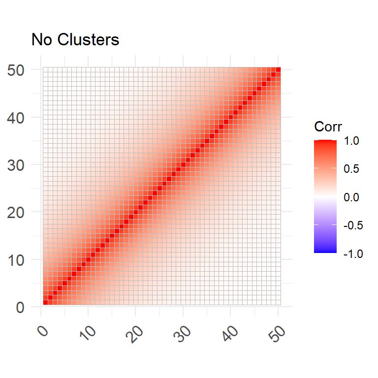
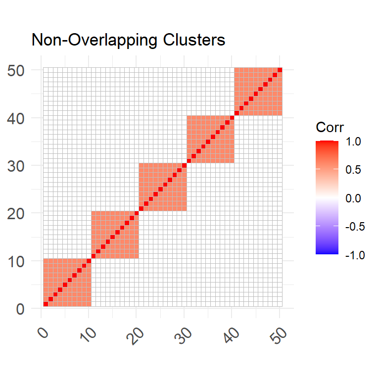
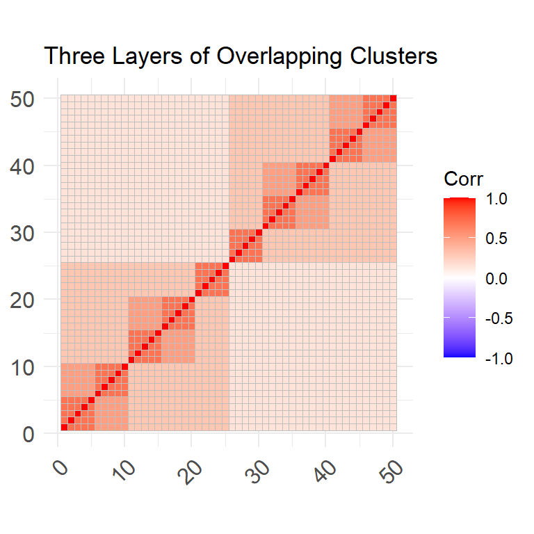
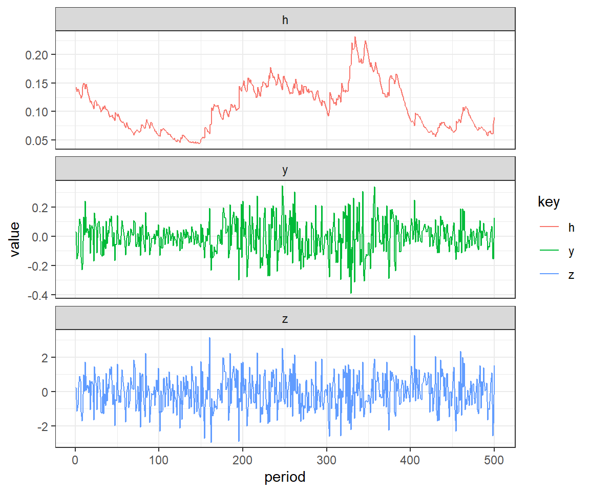

MCmarkete: An R package for the Monte Carlo Simulation of Financial Markets
Abstract
This work presents MCmarket, an R package designed to provide users with the tools to easily perform the Monte Carlo simulation of financial asset markets. The framework set out in the package allows users to specify the market’s cross-section dependence structure using the multivariate distributions described by the normal, t and Clayton copulas. The asset return series can be set according to the normal, t or skewed generalized t probability distribution functions (pdf). Mean and variance persistence can then be induced by invoking the an ARMA + APGARCH model. Among others, this package can be used for in risk risk management, asset/derivative pricing and evaluating/robustness-testing portfolio trading algorithms.
Keywords: monte carlo, copula, garch.
1 Introduction
In the field of quantitative finance, Monte Carlo simulations have been used extensively in the evaluation of portfolio optimization algorithms, risk management and the pricing of financial securities. Their unique ability to generate an ensemble of counterfactuals i.e. possible alternative realizations of stochastic processes with identical characteristics, makes them a uniquely powerful tool in aiding decision making in domains dominated by random events. They are also relatively easy to construct compared to alternative techniques that rely on complex mathematics. Meanwhile, the steady improvement in computer processing power has made the more sophisticated Monte Carlo techniques increasingly viable.
This work lays out a generalized adaption of a pre-established framework for performing the Monte Carlo simulation of financial asset market returns. Importantly, the simulated markets will adhere to the user-defined correlation structure. This framework also provides the functionality to induce various return distributions, as well as, specify their mean and variance persistence. The setting of time-series persistence is accomplished with a high degree of precision, as the exact parameters of each assets ARIMA(p,q) + APGARCH(q,p) equation can be set be specified. The key input to this financial market Monte Carlo frameworks is the markets correlation matrix as this greatly effects the potential for diversification and risk management within each counterfactual market. An interesting addition to this package is the option to use the Clayton copula to simulate market’s multivariate distribution/cross-sectional dependence, this removes the users ability to stipulate the market correlation structure but does create markets with left-tail dependence. In other words, when using the Clayton copula, the correlation between assets increases during bear markets, and market crashes in particular. This functionality is particularly useful when simulating asset markets since it is a well documented phenomenon that financial returns experience increased co-dependence during turbulent times (Syriopoulos and Roumpis 2009).
The aim of developing this package was to provide users with a set of functions that enable them to simulate financial market data with a highly generalizable set of risk factors, minimal knowledge of coding and/or the underlying mathematical/statistical techniques. Due to the importance of dynamic correlations experienced within financial markets during crisis periods, an avenue to induce various levels of the left-tail dependence within the market multivariate distribution was also implemented. At this stage the package presents a highly generalized tool for simulating financial markets that users with prior knowledge of probability distributions and time-series models can grasp. At a later stage a dashboard will be created for non-technical users to be able to simulate markets from a list of presets. Furthermore, the Monte Carlo frame work will be extended to enable regime shifts, in the correlation structure, using a Markov process.
2 Methodology
The MCmarket package uses copula’s to define the markets multivariate distributions, these distributions are then used to produce random uniformly distributed draws. These serve as the starting point of the Monte Carlo process and are the only source of randomness (Ruppert and Matteson 2011). Note that the distribution these random draws are referred to as marginal distributions. In this context it is usefull to think of a copula as a multivariate cumulative distribution function (CDF) with Uniform (0,1) marginal distributions (Ruppert and Matteson 2011[p. 183]). Therefore, since all variable posses the same marginal cumulative distribution function (CDF), copulas only contain information on the dependencies within the multivariate distribution (Ruppert and Matteson 2011).
MCmarket incorporates two broad families of copula’s, namely the Elliptical and Archimedean. The Elliptical Gaussian and t-copula’s define the respective multivariate normal and t distributions, these are used for their convenient property of relying on a \(D \times D\) correlation matrix to define their distribution.
Archimedean copula’s, on the other hand, define multivariate distributions which exhibit either left or right tail dependence. This refers to an increase in dependence within either the left or right tail of the multivariate distribution, where dependence tends to increases as observations occur further in the tails. Due to issues concerning the speed of computation and functionality within high dimensions only the the Clayton copula is used. The Clayton copula was found to be particularly useful since it naturally possesses left-tail dependence and can be defined in high dimension spaces with limited cost to computation speed.
Another important property of copulas is that their component variables are invariant to monotonic (strictly increasing) transformations (Ruppert and Matteson 2011). This property allows for the transformation of the marginals from Uniform(0,1) into any other closed form distribution via the inversion of the semi-parametric CDF (Ruenzi and Weigert 2011). MCmarket provides users with the functionality to transform the Uniform(0,1) marginals into normal, student-t or skewed generalized t (SGT) distributions. It is important to note that this transformation step is deterministic as it involves no randomness given the realisations from the random uniformly distributed draws.
MCmarket also provides the functionality to induce mean and/or variance persistence into the simulated data. This is accomplished via the use of the time-series ARMA + APARCH models, in which the marginals, which have by now been transformed to either normal, student-t or SGT distributions, are plugged into an ARMA(p,q) + GARCH(q,p) equation as the innovations of the process. This allows the user to precisely select exact parameters describing the time-series properties of the simulated data and thereby introduce varying degrees of mean and variance persistence. This step, if done correctly, is able to introduce many of the characteristics observed in real world financial data. For example financial returns have been noted to posses “outlier-prone” probability distributions, so by inducing variance persistence it becomes far more likely for the simulated returns to produce outliers, when the variance is large (Ruppert and Matteson 2011).
Another empirical phenomenon observed in many financial time series is that negative returns often tend to positively influence volatility by more than positive returns of equal magnitude, this is often referred to as the leverage effect (Ruppert and Matteson 2011). The asymmetric power auto-regressive conditional heteroskedasticity (APARCH) model is one such volatility model capable of accommodating this effect via its gamma parameter. Due to this property, and its generalizable nature (APARCH nests at least 7 other models) it is the volatility model built into MCmarkets framework(Laurent 2004).
3 Process
The Monte Carlo process involves the following 4 steps:
This example generates k periods of returns, for D Assets across N counterfactual markets.
- Draw a series of k random, uniformly distributed numbers (corresponding to k trading periods), across a set of D variables (or D assets), from a multivariate copula. The Gaussian an t copulas can be specified with a correlation matrix while the Clayton copula can defined with
- This is accomplished using Euclidean copulas (Gaussian or t-copula) to induce a correlation structure, as well as the Archmediean Clayton copula to introduce left-tail dependence. This can easily be done using R’s copula package (Hofert, Kojadinovic, Maechler, and Yan 2020).
- Tawn’s (1988) theorem states that a linear weighted combination of copulas is its own unique copula. Therefore, by weighting the random draws obtained from a multivariate Archmedian copula with those from a Clayton copula, a hybrid copula with a given correlation structure and enhanced left-tail dependence is created.
- Convert the univariate distributions from uniform into something that more resembles the distribution of asset returns. For example one could convert them into normal, student-t or skewed-generalized t distributions.
- Induce mean and variance persistence to the series, by plugging in the previously simulated series into an ARMA(p,q) + GARCH(q,p) equation as the i.i.d innovations.
- If the parameters are set accordingly the resulting series should possess the volatility clustering observed in empirical asset returns.
- The final step is to repeat the first 3 steps N times to generate an ensemble of asset markets, each with the same risk characteristics but different realization.
4 Functions and Examples
4.1 gen_cor
This function allows users to easily generate ad hoc correlation matrices with a set number of clusters and up to 4 layers.
4.1.1 Parameters: gen_cor
- D: The number of variables, gen_cor generates an D by D correlation matrix.
- clusters a character string specifying the type of cluster structure. Available options are “none”, for a correlation matrix with significant correlation, but no clusters. “non-overlapping” for a correlation matrix with one layer of clusters. “overlapping” for a correlation matrix with up to 4 layers and a set number of clusters per layer.
- num_clusters:
- If clusters = “none” then num_clusters is not used.
- If clusters = “non-overlapping” then num_clusters is an integer indicating the number of clusters.
- If clusters = “overlapping” then num_clusters is be a vector of length less than or equal to 4. The length of num_clusters specifies the number of cluster layers and the integers within the vector specify the number of clusters per layer. It is preferable to arranged the vector in descending order, but failing to do so can result in unique output but may not contain the intended number of layers. Repeating the same number for cluster in each layer, for example try num_clusters = c(10, 10, 5, 5), will create 2 layers of clusters, but with different correlation coefficients than num_clusters = c(10, 5).
This function returns a D by D correlation matrix.
4.1.2 Examples: gen_cor
R> ### Loading required packages.
R> library("MCmarket")
R> library("ggcorrplot")
R> library("dplyr")
R>
R> ### 50 by 50 Correlation matrix with no clusters.
R> cor1 <- gen_corr(D = 50, clusters = "none")
R> ggcorrplot(cor1, title = "No Clusters")
R> ### 50 by 50 correlation matrix with 5 non-overlapping clusters.
R> cor2 <- gen_corr(D = 50, clusters = "non-overlapping", num_clusters = 5)
R> ggcorrplot(cor2, title = "Non-Overlapping Clusters")
R> ### 50 by 50 correlation matrix with 2, 5 and 10 overlapping clusters.
R> cor3 <- gen_corr(D = 50, clusters = "overlapping", num_clusters = c(10, 5, 2))
R> ggcorrplot(cor3, title = "Three Layers of Overlapping Clusters")
4.2 sim_garch
This function takes a vector of random numbers and induces mean and variance persistence by plugging them into an ARIMA + GARCH model as the innovations. The input data should be mean zero and standard deviation one. These moments are are better set within sim_garch’s mu and omega arguments.
4.2.1 Parameters: sim_garch
innovations a vector containing the random numbers/ the innovations of the ARIMA + GARCH process.
omega a positive value defining the coefficient of the variance equation, default is 5e-04.
gamma a value defining the APARCH leverage parameter in the variance equation. The default of 0, implies no leverage effect and therefore corresponds with the standard GARCH model.
alpha a value defining the value of the autoregressive variance coefficient, default is 0.
beta a value defining the variance coefficient, default is 0.
mu a value defining the mean, default is 0.
ar a value defining the autoregressive ARMA coefficient, default is 0.
ma a value defining the moving average ARMA coefficient, default is 0.
delta a strictly positive value the delta parameter of the APARCH model. The default is 2, which corresponds with the standard GARCH model.
simple a logical parameter indicating if the output should be a simple vector containing just the resulting ARIMA + GARCH series, or if FALSE a three column dataframe containing z - the innovations, h - the conditional variance and y - ARMA + APARCH series.
Note
- It is suggested that the randomly distributed numbers be mean zero and standard deviation one, as these moments can be mu and omega arguments.
- Note the length of the resulting series will one observation less than that that of the innovations as ARMA(1,1) + APARCH(1,1) model effectively consumes this lag when producing its first value.
- For more information on the ARMA + APARCH parameters see: Ruppert, D. and Matteson, D.S., 2011. Statistics and data analysis for financial engineering (Vol. 13). New York: Springer.
Return if simple = TRUE a vector of the resulting ARMA + APARCH series, else if simple = FALSE a three column dataframe containing z - the innovations, h - the conditional variance and y - ARMA + APARCH series.
4.2.2 Examples: sim_garch
R> library('MCmarket')
R> library('tidyverse')
R> library('patchwork')
R> ### Creating series of 501 innovations
R> set.seed(586423)
R> inno <- rnorm(501)
R>
R> ### This produces a ARIMA + GARCH series of length 500.
R> GARCH <- sim_garch(
R+ inno,
R+ mu = 0.000002,
R+ omega = 0.00005,
R+ alpha = 0.098839,
R+ beta = 0.899506,
R+ ar = 0.063666,
R+ ma = NULL,
R+ gamma = 0.12194,
R+ delta = 1.85,
R+ simple = FALSE
R+ )
R> head(GARCH, 10)# A tibble: 10 x 3
z h y
<dbl> <dbl> <dbl>
1 NA NA NA
2 0.226 0.143 0.0323
3 -1.15 0.135 -0.154
4 -0.767 0.140 -0.117
5 0.231 0.138 0.0244
6 0.905 0.131 0.120
7 0.609 0.128 0.0859
8 -1.18 0.124 -0.140
9 -1.70 0.128 -0.227
10 -1.25 0.143 -0.193 R> ### Plotting z - the innovations, h - the conditional variance and y - ARMA + APARCH series.
R> GARCH %>% na.omit() %>%
R+ gather() %>% group_by(key) %>%
R+ mutate(period = 1:n()) %>%
R+ ggplot(aes(x=period, y = value, color=key)) +
R+ geom_line() +
R+ facet_wrap(~key, nrow = 3, scales = "free_y") + theme_bw()
4.3 sim_market
This function produces a series of returns for an asset market with a given correlation structure. The user can adjust the market’s multivariate distribution (including the left tail dependency), the univariate distributions of the returns and the mean and/or variance persistence.
It is suggested that, if the user wishes to induce mean and/or variance persistence, then the marginal distributions be set to mean zero and standard deviation one (default). These attributes are better set in the ts_model argument.
4.3.1 Parameters: sim_market
- corr: a correlation matrix that the simulated date will adhere to. Note that the number of variables simulated is equal to the number of columns in the correlation matrix.
- k: a positive integer indicating the number of time periods to simulate. Note that the number of periods generated is actually equal to k + 5 as these extra observations are needed when applying time series properties to the data.
- mv_dist: a string specifying the multivariate distribution. Can be one of c(“norm”, “t”) referring to the multivariate normal and t distributions respectively. Default is 3.
- mv_df: degrees of freedom of the multivariate distribution, required when mv_dist = “t”.
- left_cop_weight: a positive value between zero and one indicating the weight applied to the Clayton copula when creating the multivariate distribution. Note that a value between zero and one essentially generates a hybrid distribution between the chosen mv_dist and the Clayton copula. Therefore, the greater the left_cop_weight the less the data will reflect the correlation structure. Default is set to 0.
- left_cop_param: a positive value indicating the parameter of the Clayton copula. Default is 4.
- marginal_dist: a string variable specifying the univariate distribution of each variable. Can be one of c(“norm”, “t”, “sgt”) referring to the normal, student-t and skewed-generalized-t distributions respectively. Default is “norm”.
- marginal_dist_model: list containing the relevant parameters for the chosen marginal_dist. marginal_dist = “norm” accepts a mean and standard deviation with the respective defaults list(mu = 0, sigma = 1). marginal_dist = “t” accepts the non-centrality and degrees of freedom arguments, default values are list(mu = 0, df = 5). marginal_dist = “sgt” accepts the mean, sd, lambda, p and q parameters list(mu = 0, sigma = 1, lambda, p, q). Note lambda, p and q have no defaults and must therefore be set by the user.
- ts_model: a list containing various ARIMA + GARCH model parameters allowing one to specify the time series properties of the simulated returns. Note that parameter combinations resulting in non-stationary of the mean or variance will produce NAN’s and that the maximum lag allowed for any given parameter is 5. The default values are set as list(omega = 5e-04, alpha = 0, gamma = NULL, beta = 0, mu = 0, ar = NULL, ma = NULL, delta = 2).
See the “model” parameter under fGarch::garchSpec() for more details regarding the parameters themselves.
This function returns a tidy tibble containing a date, Asset and Return column.
4.3.2 Examples: sim_market
R> library('MCmarket')
R> library('tidyverse')
R>
R> # creating a correlation matrix to use as input in sim_market()
R> corr <- gen_corr(D = 20, Clusters = "none")
R>
R> # simulating 550 periods of returns across 50 assets
R> set.seed(46468)
R> market_data <- sim_market(corr,
R+ k = 550,
R+ mv_dist = "norm",
R+ left_cop_weight = 0.1,
R+ marginal_dist = "norm",
R+ ts_model = list(mu = 0.000002,
R+ omega = 0.00005,
R+ alpha = 0.098839,
R+ beta = 0.899506,
R+ ar = 0.063666,
R+ ma = NULL,
R+ gamma = 0.12194,
R+ delta = 1.9))
R>
R> # Visualising the market
R> market_data %>%
R+ group_by(Asset) %>%
R+ mutate(cum_ret = 100*cumprod(1 + Return)) %>%
R+ ggplot() +
R+ geom_line(aes(x = date, y = cum_ret, color = Asset)) +
R+ facet_wrap(~Asset, scales = "free_y") +
R+ theme(legend.position = "none")4.4 mc_market
This function produces an ensemble of market returns for an asset market with a given correlation structure. The user can adjust the market’s multivariate distribution (including the left tail dependency), the univariate distributions of the returns and the mean and/or variance persistence.
It is suggested that, if the user wishes to induce mean and/or variance persistence, then the marginal distributions be set to mean zero and standard deviation one (default). These attributes are better set in the ts_model argument.
4.4.1 Parameters: mc_market
- corr: a correlation matrix that the simulated date will adhere to. Note that the number of variables simulated is equal to the number of columns in the correlation matrix.
- N: a positive integer indicating the number of markets to simulate.
- k: a positive integer indicating the number of time periods to simulate. Note that the number of periods generated is actually equal to k + 5 as these extra observations are needed when applying time series properties to the data.
- mv_dist: a string specifying the multivariate distribution. Can be one of c(“norm”, “t”) referring to the multivariate normal and t distributions respectively. Default is 3.
- mv_df: degrees of freedom of the multivariate distribution, required when mv_dist = “t”.
- left_cop_weight: a positive value between zero and one indicating the weight applied to the Clayton copula when creating the multivariate distribution. Note that a value between zero and one essentially generates a hybrid distribution between the chosen mv_dist and the Clayton copula. Therefore, the greater the left_cop_weight the less the data will reflect the correlation structure. Default is set to 0.
- left_cop_param: a positive value indicating the parameter of the Clayton copula. Default is 4.
- marginal_dist: a string variable specifying the univariate distribution of each variable. Can be one of c(“norm”, “t”, “sgt”) referring to the normal, student-t and skewed-generalized-t distributions respectively. Default is “norm”.
- marginal_dist_model list containing the relevant parameters for the chosen marginal_dist. marginal_dist = “norm” accepts a mean and standard deviation with defaults list(mu = 0, sigma = 1) respectively. marginal_dist = “t” accepts the non-centrality and degrees of freedom arguments, default values are list(mu = 0, df = 5). marginal_dist = “sgt” accepts the mean, sd, lambda, p and q parameters list(mu = 0, sigma = 1, lambda, p, q). Note lambda, p and q have no defaults and must therefore be set by the user.
- ts_model a list containing various ARMA + APARCH model parameters allowing one to specify the time series properties of the simulated returns. Note that parameter combinations resulting in non-stationary of the mean or variance will produce NAN’s and that the maximum lag allowed for any given parameter is 5. If the user intends to include additional lags simply provide the respective arguments as a vector within the ts_model list. The default values are set as list(omega = 5e-04, alpha = 0, gamma = NULL, beta = 0, mu = 0, ar = NULL, ma = NULL, delta = 2), therefore if the gamma and delta parameters are left at their default values then the model reverts to a standard GARCH equation. See the “model” parameter under fGarch::garchSpec() for more details regarding the parameters themselves.
Set ts_model = Null and mean and sd as required in the marginial_dist_model parameter if one intends to simulate returns with no mean or variance persistence.
4.4.2 Examples: mc_market
R> library('MCmarket')
R> library('tidyverse')
R>
R> # creating a correlation matrix to use as input in sim_asset_market
R> corr <- gen_corr(D = 20, Clusters = "none")
R>
R> # simulating 550 periods of returns across 50 assets
R> set.seed(12542)
R> mc_data <- mc_market(corr,
R+ N = 10,
R+ k = 550,
R+ mv_dist = "norm",
R+ left_cop_weight = 0.1,
R+ marginal_dist = "norm",
R+ ts_model = list(mu = 0.000002,
R+ omega = 0.00005,
R+ alpha = 0.098839,
R+ beta = 0.899506,
R+ ar = 0.063666,
R+ ma = NULL,
R+ gamma = 0.12194,
R+ delta = 1.85))
R>
R> # Visualising the market
R> mc_data %>%
R+ group_by(Asset, Universe) %>%
R+ arrange(date) %>%
R+ mutate(cum_ret = cumprod(1 + Return)*100) %>%
R+ ggplot() +
R+ geom_line(aes(x = date, y = cum_ret, color = Universe), size = 1, alpha = 0.5) +
R+ facet_wrap(~Asset, scales = "free_y") +
R+ labs(title = "Ensemble of Cumulative Returns",
R+ subtitle = "10 Realizations for a Market of 20 Assets") +
R+ theme_bw()+
R+ theme(legend.position = "none")4.4.3 Workflow
Simulating 500 periods across an ensemble of 20 markets with 20 assets with high variance persistence, high market risk and 4 non-overlapping clusters.
R> library('MCmarket')
R>
R> # Generating a 20 by 20 correlation matrix with 4 non-overlapping clusters
R> corr <- gen_corr(D = 20, Clusters = "non-overlapping", Num_Clusters = 4)
R>
R> # Simulating markets
R> mc_market(corr,
R+ N = 20, # Number of ensembles/counterfactuals
R+ k = 500, # Number of periods
R+ mv_dist = "t", # Student-t copula chosen for the part of the
R+ # multivariate distribution that adheres to the correlation structure.
R+ mv_df = 3, # Degrees of freedom for student-t copula
R+ left_cop_weight = 0.25, # weight
R+ left_cop_param = 5,
R+ ts_model = list()
R+ )4.5 Work Flow
References
Davis C (2015). Sgt: Skewed Generalized T Distribution Tree. Retrieved from https://CRAN.R-project.org/package=sgt
Hofert M, Kojadinovic I, Maechler M, Yan J (2020). Copula: Multivariate Dependence with Copulas. Retrieved from https://CRAN.R-project.org/package=copula
Laurent S (2004). “Analytical Derivates of the Aparch Model.” Computational Economics, 24(1), 51–57.
Ruenzi S, Weigert F (2011). “Extreme Dependence Structures and the Cross-Section of Expected Stock Returns.” In EFA 2011 meetings paper.
Ruppert D, Matteson DS (2011). Statistics and Data Analysis for Financial Engineering Vol. 13. Springer.
Syriopoulos T, Roumpis E (2009). “Dynamic Correlations and Volatility Effects in the Balkan Equity Markets.” Journal of International Financial Markets, Institutions and Money, 19(4), 565–587.
Wang P, Sullivan RN, Ge Y (2012). “Risk-Based Dynamic Asset Allocation withExtreme Tails and Correlations.” The Journal of Portfolio Management, 38(4), 26–42.